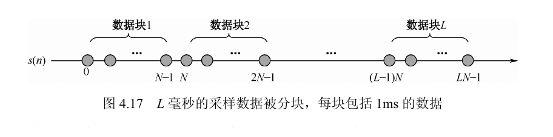
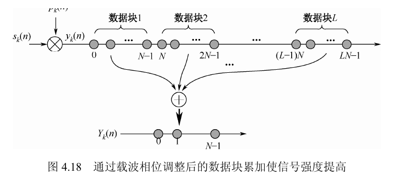
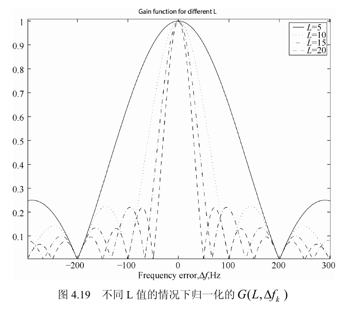
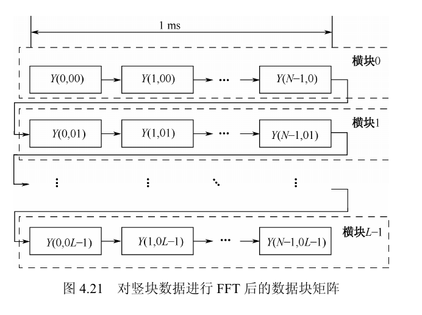
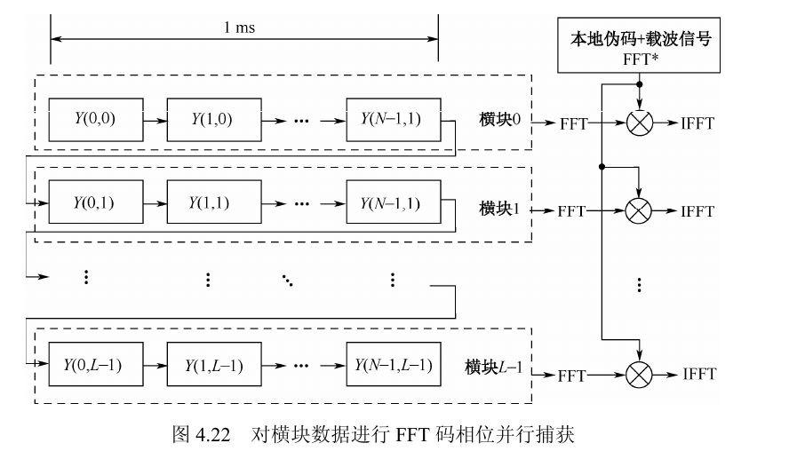
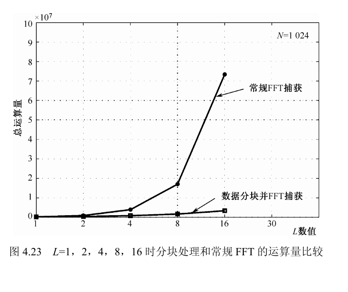

4.1.6 基于数据分块和频率补偿的信号捕获
这页把 4.1.6 节的核心内容重写成一份可直接学习的讲义：先讲信号模型和数据分块，再讲增益函数、频率补偿、竖块 FFT 与横块捕获，把公式推导、图示和理解要点放到同一条叙述线上。后续复习时只看这一页即可。
交互式演示：分块、频率补偿与捕获峰
同一码相位跨毫秒观察相位旋转
横轴：码相位，纵轴：频率索引
细频率分辨率125 Hz
相干增益9.03 dB
匹配频率索引m=2
问题背景：为什么要采用“分块 + 频率补偿”
这一节不是凭空发明一种新 FFT 技巧，而是在回答一个很具体的问题：弱信号下想把相干时间拉长，为什么直接把 $L$ ms 数据做长时间处理不够稳、不够快？
起点：$L$ ms，$N$ 点/ms
参与 FFT 处理的数据总长度不能超过数据比特不跳变所允许的最大长度，否则相关峰会出现抵消。对 GPS C/A 来说，数据比特长度是 20 ms，所以总长度一般控制在 20 ms 以内；对北斗某些信号，受 NH 码或数据结构影响，可直接相干处理的长度会更短。这说明“单纯把数据越攒越长”并不是通用答案。
于是 4.1.6 转向一个更精细的思路：不把 $L$ ms 数据当作一个粗暴的长序列，而是利用伪码 1 ms 周期重复的结构，把时间维拆开处理。这样做的目标有两个：
- 在灵敏度上，希望跨多个 1 ms 数据块做相干叠加，得到接近长时间积分的 SNR 收益。
- 在运算量上，希望避免对长度为 $LN$ 的长序列在大量频点上反复做大 FFT。
这就是“分块”和“频率补偿”同时出现的原因。分块负责把结构暴露出来，频率补偿负责让这些块真的能叠加。
图 4.17先把 $L$ ms 采样流切成 $L$ 个 1 ms 数据块。
式 (4.65)给出单颗卫星的离散复信号模型。
式 (4.66)尝试把不同块中相同位置的样点直接叠加。
式 (4.67)-(4.68)把叠加效果归结为块间增益函数 $G(L,f_k)$。

理解要点：先建立“箭头”直觉
接收到的 IQ 信号可以看成复平面上一根旋转箭头。相关累加希望这些箭头朝同一个方向叠加；如果残余频率存在，箭头每过 1 ms 都会转一个角度，直接相加就可能抵消。
初学者检查点
本节的核心问题不是“先算 FFT 还是先算相关”，而是“同一码相位跨多个毫秒能不能稳定同相叠加”。只有这个问题被解决，长数据才不会一边增加积分长度，一边把相关峰自己抵消掉。
第一步：信号模型与“同位置样点”重排
先从式 (4.65) 建立离散复信号模型，再观察跨块同一位置上哪些量保持不变、哪些量发生变化。这一步决定了后续为什么能沿“竖向”看相位。
$T_b=NT_s=1\text{ ms}$
交互矩阵：同一列为什么可以拿出来看
青色列表示同一码相位在不同毫秒中的样点。每块长度正好是 1 ms，所以这些样点的伪码位置一致；纵向剩下最值得观察的变化，就是载波相位随块序号旋转。
离散信号模型
$$s_k(n)=D_k(nT_s)C_k(nT_s)e^{j2\pi f_k nT_s}+v_k(nT_s)$$
这里的 $s_k(n)$ 是进入数字捕获算法前的离散中频/基带等效采样信号。$D_k$ 是导航数据位，$C_k$ 是伪随机码，$f_k$ 是受到多普勒影响后的载波频率，$v_k$ 是高斯白噪声。
同一列的样点
$$s(i),\ s(N+i),\ \dots,\ s((L-1)N+i)$$
固定 $i$ 就固定了 1 ms 内的采样位置，也就是固定了码相位；块序号每增加 1，时间增加 $NT_s=1$ ms，所以这串数据天然是一条“慢时间序列”。
为什么同一列只有载波项在变
当 $L$ 小于数据位跳变周期时，可以把 $D_k$ 看作常数；又因为伪码周期是 1 ms，所以对于同一个列索引 $i$，有：
$$C_k(iT_s)=C_k\bigl[(i+N)T_s\bigr]=\cdots=C_k\bigl[(i+(L-1)N)T_s\bigr]$$
因此跨块同一位置样点的区别主要只剩下载波项 $e^{j2\pi f_k nT_s}$。这正是不同块中相同位置样点可以被拿出来单独相加的基础。
式 (4.66)：直接叠加的写法
$$\sum_{i=0}^{L-1}s_k(n+iN)=\{S_s^{(k)}(n)\}G(L,f_k)+\sum_{i=0}^{L-1}v_k(n+iN)$$
这里把信号项和噪声项分开看：信号项乘上块间增益函数 $G(L,f_k)$，噪声项只是各块噪声的求和。
式 (4.67)：块间增益函数
$$G(L,f_k)=\sum_{i=0}^{L-1}e^{j2\pi f_k iNT_s}$$
这是一个有限长复指数求和。它编码的正是“每过一个 1 ms 数据块，相位到底又多转了多少”。

理解要点：为什么“相同位置”重要
把 $L$ 个数据块的相同位置样点叠加，是因为每个数据块正好是 1 ms，而伪随机码周期也为 1 ms。这样同一列的数据位和伪码都可视为相同，才能把问题集中到载波相位补偿上。
第二步：块间增益函数、相位补偿与搜索步进
这一节先用 $G(L,f_k)$ 说明直接叠加为什么不可靠，再引入补偿信号 $p_k(n)$，把“对不齐的相位”转成“可控的相位”。这里是整节内容的数学核心。
$G(L,f_k)$ 决定累加收益
1. 先看直接相加为什么不稳
对同一列样点相加时，信号部分会被乘上一个块间增益函数：
$$G(L,f_k)=\sum_{i=0}^{L-1}e^{j2\pi f_k iNT_s}$$
上式即式 (4.67)，它把“块间相位是否能对齐”压缩成一个增益函数。
这是一个公比为 $q=e^{j2\pi f_kNT_s}$ 的等比级数。当 $q\neq 1$ 时，可直接用等比数列求和得到：
$$G(L,f_k)=\frac{1-e^{j2\pi f_kLNT_s}}{1-e^{j2\pi f_kNT_s}}=e^{j\pi f_k(L-1)NT_s}\frac{\sin(\pi L f_kNT_s)}{\sin(\pi f_kNT_s)}$$
$$|G(L,f_k)|=\left|\frac{\sin(\pi L f_kNT_s)}{\sin(\pi f_kNT_s)}\right|$$
这里就是式 (4.68)。第一项是相位因子，幅度真正由后面的正弦比值决定。
如果每相邻两个 1 ms 块之间的相位差是 $2\pi$ 的整数倍，那么所有项同相，$|G|$ 取得最大值 $L$。如果相位差不合适，复平面上的箭头会绕成一圈，累加后反而变小甚至接近 0。
最大值条件
$$e^{j2\pi f_kNT_s}=1\Longleftrightarrow f_kNT_s\in\mathbb{Z}$$
由于 $NT_s=1$ ms，上式等价于 $f_k$ 是 1 kHz 的整数倍。此时 $L$ 项全部同相，$G(L,f_k)=L$。
第一个过零点
$$\sin(\pi L f_kNT_s)=0\Longrightarrow f_k=\frac{m}{LNT_s}$$
当 $NT_s=1$ ms 时，第一个过零点大约在 $\pm 1\text{ kHz}/L$。这说明 $L$ 越大，频率误差容忍度越小。

2. 再看补偿信号如何把问题变成可控
$$p_k(n)=e^{j2\pi \Delta f_k nT_s},\qquad y_k(n)=s_k(n)p_k(n)$$
补偿信号 $p_k(n)$ 与补偿后信号 $y_k(n)$ 对应式 (4.69)。
补偿后载波频率变为 $f_k'=f_k+\Delta f_k$。式 (4.70)-(4.72) 的核心意思是：只要 $\Delta f_k$ 选得合适，让 $f'_k$ 在跨块观察时满足同相条件，就能把块间累加增益恢复到接近 $L$。
式 (4.70)：补偿后的块累加
$$Y_k(n)=\sum_{i=0}^{L-1}y_k(n+iN)=S\{y_k(n)\}G(L,f_k')+\sum_{i=0}^{L-1}v'_k(n+iN)$$
这一步和式 (4.66) 完全平行，只是把原来的 $f_k$ 换成了补偿后的 $f_k'=f_k+\Delta f_k$。因此问题没有变成“如何重新做相关”，而只是变成“如何让新的增益函数 $G(L,f_k')$ 取最大”。
式 (4.71)-(4.72)：何时得到满增益
$$e^{j2\pi f_k'NT_s}=1\Longleftrightarrow f_k'T_b=m,\quad T_b=NT_s,\ m\in\mathbb{Z}$$
$$Y_k(n)=L\,S\{y_k(n)\}+\sum_{i=0}^{L-1}v'_k(n+iN)$$
只要相邻块之间的相位差恰好是整数圈，$L$ 个信号项就完全同相，而噪声只是随机叠加。这也是补偿信号可以被看作“载波相位调整序列”的原因。
$$\operatorname{mod}(f_k',1\text{ kHz})=0$$
这就是式 (4.71)。满足该条件时，式 (4.72) 表明补偿后块累加的信号强度可增强到 $L$ 倍量级。
把它改写成补偿量本身，可以直接得到优化补偿量的通式：
$$\Delta f_k^{(\mathrm{opt})}=\frac{m}{T_b}-f_k,\qquad T_b=NT_s=1\text{ ms}$$
这个式子把“优化的 $\Delta f_k$”具体化了：它不是凭经验试出来的，而是由“跨块相位差必须是整数圈”直接推出的。
这也是为什么优化解并不唯一：只要多补或少补一个整 1 kHz，在每隔 1 ms 的观测点上仍然等效同相。
这组优化量只对当前 PRN $k$ 有效
$$\Delta f_k^{(\mathrm{opt})}=\frac{m}{T_b}-f_k$$
式中用到的是第 $k$ 颗卫星自己的残余载波频率 $f_k$。换一颗卫星，哪怕码长相同、分块方式相同，残余多普勒和数据状态也不同，因此最优补偿量并不会照搬过去。
优化量按 $1/T_b$ 周期重复
$$\Delta f_k^{(\mathrm{opt})}+\frac{q}{T_b},\qquad q\in\mathbb{Z}$$
跨块叠加只观察每隔 $T_b$ 的相位变化。若某个补偿量已经让相邻块之间多转整数圈，那么再额外加上 $q/T_b$ 也仍然只会多转整数圈，所以它们在块间观察上等效同相。
相干增益对应 $10\lg L$ dB
$$\mathrm{SNR}_{\text{out}}=\mathrm{SNR}_{\text{in}}\cdot L,\qquad G_{\mathrm{SNR}}=10\log_{10}L$$
完全同相时，信号幅度累加成 $L$ 倍，功率变成 $L^2$ 倍；噪声功率只线性增长为 $L$ 倍，因此输出信噪比提升 $L$ 倍，也就是 $10\lg L$ dB。
理解要点：为什么优化的 $\Delta f_k$ 会周期出现
跨数据块叠加只关心每隔 $T_b=1$ ms 的相位变化。如果某个补偿量能让相邻块多转角度变成整数个 $2\pi$，那么 $\Delta f_k^{(\mathrm{opt})}+q/T_b$ 也同样最优；在本节里 $1/T_b=1$ kHz，因此优化补偿量会按 1 kHz 周期重复出现。
信号为什么增强到 $L$ 倍
$$\text{幅度}\times L,\qquad \text{功率}\times L^2$$
完全同相时，$L$ 个复向量会沿同一方向首尾相接，得到的是长度扩大到 $L$ 倍的一根箭头。
噪声为什么只涨到 $L$ 倍
$$v'_k(n+iN)\sim\mathcal{N}(0,\sigma^2)\Longrightarrow \sum_{i=0}^{L-1}v'_k(n+iN)\sim\mathcal{N}(0,L\sigma^2)$$
噪声方差线性增长，所以最终相干累加信噪比提高 $L$ 倍，也就是 $10\log_{10}L$ dB。直观地看，就是“信号幅度线性增、噪声功率线性增”，因此净收益会留在信噪比上。
3. 搜索范围和搜索步进从哪里来
由上面的相位周期性可以直接得到：优化 $\Delta f_k$ 的搜索范围可以缩小到 $[0,1\text{ kHz}]$。因为更宽的搜索范围只是这个区间按 1 kHz 周期平移后的重复。
搜索步进由 $G(L,\Delta f_k)$ 的主瓣宽度决定。由于主瓣第一个过零点大约在 $\pm 1/(LT_b)$，所以步进尺度可以直接写成：
$$\Delta f_{\text{step}}\approx \frac{1}{LT_b}=\frac{1\text{ kHz}}{L}$$
它对应 $G(L,\Delta f_k)$ 的主瓣第一个过零点尺度，也是从图 4.19 读出 200 Hz、100 Hz 这些示例的依据。
经验上取这个尺度附近作为步进，既不至于漏掉峰值，又能把频点数控制住。典型例子是：$L=5$ 可用 200 Hz，$L=10$ 可用 100 Hz，对应最大灵敏度损失约 2 dB。

平方检测为什么不是最终答案
如果对补偿后数据块先平方再看频谱，这种方法更适合强信号；弱信号下平方操作会把有用频谱压得更差，因此后续需要继续寻找一种能并行搜索 $\Delta f_k$、又适合弱信号的方法：竖块 FFT。
第三步：放弃串行搜 $\Delta f_k$，改用竖块 FFT
在否定了“串行试遍 $\Delta f_k$”和“平方后看频谱”两个思路之后，真正关键的一步就出现了：把同一码相位的慢时间序列直接送进 FFT。
竖向采样率：1 kHz
1. 步进确定后，候选补偿量如何组织
上一节已经得到搜索步进大约应取 $\Delta f_{\text{step}}\approx 1/(LT_b)=1\text{ kHz}/L$。这意味着在每个 1 kHz 粗频率区间内，可以自然构造出一组候选补偿量：
$$\Delta f_k(m)=m\cdot \frac{1\text{ kHz}}{L},\qquad m=0,1,\dots,L-1$$
最直接的实现方式有两种。第一种是对每个候选补偿量做相位补偿后进行平方检测，再看频谱峰；第二种是对每个候选补偿量都完整做一次捕获，然后逐个比较相关输出。前者只在强信号下可靠，后者则会把计算量重新拉回“串行试遍所有 $\Delta f_k$”的状态。
因此更自然的做法是把这组候选频偏假设隐含进一次 $L$ 点竖块 FFT 里，让 FFT 同时完成“反向旋转 + 相干累加 + 候选量比较”。这样一来，不需要显式为每个 $\Delta f_k$ 单独构造一条补偿支路。
2. 为什么要放弃“先平方再 FFT”
对补偿后块累加结果 $Y_{k,l}(n)$ 先平方，确实能把信号分量变成连续波，再尝试用频谱峰判断最优 $\Delta f_k$。但这里不能停在这个直觉上，还要把噪声项也写出来，得到式 (4.73)-(4.77)：
$$Y_{k,l}^2(n)=D_k^2(n)C_k^2(n)e^{j2\pi 2(f_k+\Delta f_k)nT_s}L^2+V^2(n)+2LV(n)D_k(n)C_k(n)e^{j2\pi(f_k+\Delta f_k)nT_s}$$
这就是式 (4.73)。平方以后，理想信号项变成连续波，但同时也引入了噪声平方项和信号-噪声交叉项。
$$\eta_n(L)=V^2(n)+2LV(n)D_k(n)C_k(n)e^{j2\pi(f_k+\Delta f_k)nT_s}$$
$$E[\eta_n(L)]=L\sigma^2,\qquad \operatorname{var}[\eta_n(L)]=2L^2\sigma^4+4L^3\sigma^2$$
$$\mathrm{SN}_{\text{平方}}=\frac{L^4}{2L^2\sigma^4+4L^3\sigma^2}$$
强信号时为什么可行
$$\frac{L}{\sigma^2}\gg 1\Longrightarrow \mathrm{SN}_{\text{平方}}\approx\frac{L}{4\sigma^2}$$
当相干累加后的信号已经明显强于噪声时，平方后仍能保留可见的频谱峰，所以对强信号有效。
弱信号问题
$$\frac{L}{\sigma^2}\ll 1\Longrightarrow \mathrm{SN}_{\text{平方}}\approx\frac{L^2}{2\sigma^4}\to 0$$
弱信号下有用谱峰会被噪声平方项和交叉项淹没，因此平方检测不适合作为 4.1.6 的主算法。
这一步对初学者很关键：这里不是简单说“平方不好用”，而是明确算出它只在强信号时有效。弱信号又不能无限增大 $L$ 来补救，因为 $L$ 还受导航比特或 NH 码跳变边界约束。
3. 竖块中到底是什么数据
图 4.20 把原始一维流重排成二维矩阵后，固定列索引 $i$，第 $i$ 个竖块是：
$$[s(i),\ s(N+i),\ \dots,\ s((L-1)N+i)]$$
式 (4.78) 说明，这串数据都可以写成第一个样点乘上一个按块序号增长的复指数。由于 $NT_s=1$ ms，可把频率拆成整数 kHz 部分和 1 kHz 内的余数部分：
$$s(i)=C_kD_ke^{j2\pi f_kiT_s+\phi_0},\quad s(N+i)=s(i)e^{j2\pi f_kNT_s},\quad \dots,\quad s((L-1)N+i)=s(i)e^{j2\pi f_k(L-1)NT_s}$$
这就是式 (4.78)：同一竖块里的所有点都等于第一个点乘上一个“按块序号线性增长的相位因子”。
$$f_k=F\cdot 1\text{ kHz}+\Delta f_k,\qquad 0\le \Delta f_k<1\text{ kHz}$$
$$e^{j2\pi f_k qNT_s}=e^{j2\pi(F\cdot 1\text{ kHz}+\Delta f_k)q\cdot 1\text{ ms}}=e^{j2\pi Fq}e^{j2\pi \Delta f_k qNT_s}=e^{j2\pi \Delta f_k qNT_s}$$
这一步把式 (4.79) 解释清楚了：整数 kHz 部分在竖向采样点上只会多转整圈，因此真正留下来的只有余频 $\Delta f_k$。
理解要点：为什么要把 $f_k$ 分成整数 kHz 和余频
竖向相当于每 1 ms 采样一次，即竖向采样率是 1 kHz。若某个频率恰好是 1 kHz 的整数倍，那么每隔 1 ms 观察一次时相位只会多转整圈，所以在竖向上“看不出来”，真正要分辨的是余下的 $\Delta f_k$。
4. 对竖块做 FFT 后，为什么它等价于并行搜索余频
由于竖块中相邻样点时间间隔是 1 ms，所以竖向慢时间采样率就是 1 kHz。对每个竖块做 $L$ 点 FFT，得到：
$$Y(i,m)=\sum_{n=0}^{L-1}s(i)e^{j\Delta\omega nNT_s}e^{-j\omega_m nNT_s},\qquad \omega_m=\frac{2\pi f_p}{L}m,\ f_p=1\text{ kHz}$$
这就是式 (4.80)。它的含义不是“做一个黑盒 FFT”，而是：同时用 $L$ 个候选角频率 $\omega_m$ 去反向旋转这 $L$ 个样点，然后分别看看谁最能把它们对齐。
$$Y(i,m)=s(i)\frac{1-e^{j(\Delta\omega-\omega_m)LNT_s}}{1-e^{j(\Delta\omega-\omega_m)NT_s}}=s(i)A(m)$$
这就是式 (4.81)。当 $\omega_m=\Delta\omega$ 时，反向旋转刚好抵消真实旋转，$L$ 个箭头方向完全一致，于是这一谱线输出最大。
$$|A(m)|=\left|\frac{\sin\left[(\Delta\omega-\omega_m)LNT_s/2\right]}{\sin\left[(\Delta\omega-\omega_m)NT_s/2\right]}\right|$$
这就是式 (4.82)。它和前面的 $G(L,f)$ 是同一类狄利克雷核：只要第 $m$ 根谱线的反向旋转最接近真实余频，这个模值就会冲到接近 $L$。
理解要点：把竖块 FFT 看成“一次并行试遍 $L$ 个余频”
若 $L=10$，竖向采样率是 1 kHz，那么第 $m$ 根谱线对应的候选余频就是 $0,100,200,\dots,900$ Hz。也就是说，竖块 FFT 不是额外做一个频谱图，而是一次性并行测试这 10 个 $\Delta f_k$ 假设。

粗频率与细频率的分工
竖向处理只能看见 1 kHz 内的余频，所以本地载波要按 1 kHz 粗搜索。粗频率 $f_i$ 决定落在哪个 1 kHz 区间，竖块 FFT 的 $m$ 决定这个区间内的细频率。
第四步：横块并行捕获，把余频索引变成最终二维峰
竖块 FFT 只解决“1 kHz 内哪条余频谱线最像真实相位旋转”。真正的捕获结果，还要把这个频率索引和伪码相位联系起来，形成频率 × 码相位的二维搜索面。
公共项：$Y(i,m)=s(i)A(m)$
频率索引能量
拖动首屏的残余频偏和分块数 $L$，观察哪个 $m$ 谱线能量最高。$L$ 越大，1 kHz 被切得越细，频率分辨率越高；固定 $m$ 后，这一行就要交给横块捕获继续找码相位。
重排后的横块
$$[Y(0,m),Y(1,m),\dots,Y(N-1,m)]$$
固定某个频率索引 $m$ 后，把所有横向位置收集起来，就得到一个新的等效 1 ms 数据块。
选频因子
$$A(m)=\frac{1-e^{j(\Delta\omega-\omega_m)LNT_s}}{1-e^{j(\Delta\omega-\omega_m)NT_s}}$$
$A(m)$ 与横向采样位置 $i$ 无关，所以它不会破坏伪码结构，只相当于给整个横块乘了一个复系数。
1. 为什么 FFT 后还要“重新排列”
对每个竖块做 FFT 后，我们得到的是“同一码相位下，多个候选频率的输出”。但码相位捕获要求输入的是“同一频率假设下，一个完整 1 ms 序列”。因此必须交换观察角度：从“按列看频率输出”切换成“按行看同频率假设”。
$$\mathbf{Y}=
\begin{bmatrix}
Y(0,0) & Y(1,0) & \cdots & Y(N-1,0)\\
Y(0,1) & Y(1,1) & \cdots & Y(N-1,1)\\
\vdots & \vdots & \ddots & \vdots\\
Y(0,L-1) & Y(1,L-1) & \cdots & Y(N-1,L-1)
\end{bmatrix}_{L\times N}$$
这个 $L\times N$ 矩阵的列索引 $i$ 仍表示 1 ms 内的采样位置，而行索引已经从“第几个时间块”变成了“第几个余频假设 $m$”。也就是说，竖块 FFT 完成后，矩阵的物理含义已经从“时间块 × 采样点”变成“频率假设 × 采样点”。
理解要点：为什么 FFT 后要重新排列
竖向 FFT 把原来的 $L$ 个 1 ms 时间块变成 $L$ 个频率假设块。做码相位搜索时必须保持频率索引一致，所以要把同一个 $m$ 下的 $Y(0,m),Y(1,m),\dots,Y(N-1,m)$ 收集成一个新的等效 1 ms 序列。
固定 $m$ 后，这个横块可以写成：
$$s(0)A(m),\ s(1)A(m),\ \dots,\ s(N-1)A(m)$$
换句话说，第 $m$ 行本身就是“在第 $m$ 个余频假设下得到的等效 1 ms 数据块”。因为 $A(m)$ 对所有横向样点相同，所以横向采样间隔仍是 $T_s$，伪码结构仍是完整的 1 ms 周期。于是这一行可以直接送入 4.1.4 节已有的 FFT 快速捕获框架。
公共因子为什么不改码结构
$$Y(i,m)=s(i)A(m)\Longrightarrow Y_m=[s(0),\dots,s(N-1)]\cdot A(m)$$
$A(m)$ 只依赖频率索引 $m$，不依赖横向采样位置 $i$。所以同一行里所有采样点只是被整体乘上同一个复数，不会打乱 1 ms 伪码周期。
为什么能直接接 4.1.4 节
$$R_m(\tau)=\sum_{i=0}^{N-1}Y(i,m)c^*(i-\tau)=A(m)\sum_{i=0}^{N-1}s(i)c^*(i-\tau)$$
公共因子可以从求和号中提出，所以它只改变峰值高度，不改变峰所在的码相位位置。实现上仍可用 FFT/IFFT 一次性得到全部 $\tau$ 的相关结果。

理解要点：为什么粗频率不能省掉
竖块 FFT 只能看见 1 kHz 内的余频；而横向相邻采样点间隔是 $T_s$，所以整数 kHz 频差在横向并不会自动消失。若外层粗频率 $f_i$ 设错了，横向相关时仍会保留线性相位斜率，相关峰会被压低甚至接近 0。
2. 最终频率估计怎么组成
竖块 FFT 只给出 1 kHz 区间内的细频率索引；横块捕获外层枚举的本地载波频率给出粗频率区间。式 (4.83) 把两者拼起来：
$$f(m)=f_i+m\cdot\frac{1\text{ kHz}}{L},\qquad m=0,1,\dots,L-1$$
因此最终搜索面有两个坐标轴：一个是频率，一个是码相位。二维峰的位置同时给出多普勒频率和伪码相位估计。
第五步：运算量推导、粗细频率分工与方法总结
这一节最后不是只说“它更快”，而是明确按 FFT 点数把分块方法和常规长 FFT 方法逐项算出来。这里也顺手回答“为什么粗搜索间隔自然是 1 kHz”的疑问。
默认 $N=1024$
二维相关热力图
亮点位置表示检测峰。纵向索引对应细频率 $m$，横向索引对应伪码相位。真实捕获时外层还要枚举粗频率档位 $f_i$。
频率估计
$$\hat f=f_i+m\cdot\frac{1\text{ kHz}}{L},\quad m=0,1,\dots,L-1$$
$f_i$ 是外层粗搜索的 1 kHz 档位，$m$ 是竖块 FFT 给出的余频索引，二维峰横坐标则给出码相位。
粗搜索间隔为什么固定 1 kHz
$$e^{j2\pi(f+1\text{ kHz})n\cdot 1\text{ ms}}=e^{j2\pi fn\cdot 1\text{ ms}}$$
竖块方向慢时间采样率就是 1 kHz，竖块 FFT 只能区分一个 1 kHz 周期内的余频。若粗搜索间隔大于 1 kHz 会漏档，小于 1 kHz 会重复覆盖同一段余频。
01外层枚举本地载波粗频率，间隔 1 kHz。
02把 $L$ ms 数据排成 $L\times N$ 矩阵。
03对每个竖块做 $L$ 点 FFT，得到余频索引。
04按 $m$ 重排成 $L$ 个横块，每块长度 $N$。
05对每个横块做 FFT/IFFT 相关，找二维峰。
1. 工程上常见的 $L$ 取值意味着什么
若粗搜索范围按 $\pm 5$ kHz 取 10 个 1 kHz 档位，那么每个档位内部由竖块 FFT 再分成 $L$ 个细频率索引。常见的几组取值可以直接对应到频率分辨率：
- $L=2$：细频率分辨率 $500$ Hz，总频率假设数是 $10\times 2=20$。
- $L=4$：细频率分辨率 $250$ Hz，总频率假设数是 $10\times 4=40$。
- $L=8$：细频率分辨率 $125$ Hz，总频率假设数是 $10\times 8=80$。
- $L=16$：细频率分辨率 $62.5$ Hz，总频率假设数是 $10\times 16=160$。
$L$ 增大时，细频率分辨率会变好，相干增益也会提高；但同时主瓣更窄、对频率误差更敏感，且可用积分时长还必须受导航比特或 NH 码跳变边界约束。因此工程上通常在 $L=2,4,8,16$ 这一类 2 的幂附近折中选择。
2. 分块法的运算量如何逐项展开
若把一个 $n$ 点 FFT 的运算量近似记为 $n\operatorname{lb}(n)$，则分块法包含两部分：
- 竖块 FFT：共有 $N$ 个竖块，每个做一次 $L$ 点 FFT，故运算量是 $NL\operatorname{lb}(L)$。
- 横块捕获：粗频率共有 10 个 1 kHz 档位；每个档位有 $L$ 个横块，每个横块要做一次 $N$ 点 FFT 和一次 $N$ 点 IFFT，所以是 $20LN\operatorname{lb}(N)$。
$$C_{\text{Block}}=20LN\operatorname{lb}(N)+NL\operatorname{lb}(L)$$
把式 (4.84) 因式分解后就是 $NL[20\operatorname{lb}(N)+\operatorname{lb}(L)]$。这一步很重要，因为它直接揭示了分块法随积分长度增长时主要是线性放大，而不是平方放大。
3. 常规长 FFT 为什么会多出一个 $L$
若直接把整段数据当成长为 $LN$ 的单个序列处理，为了达到同样的细频率分辨率 $\Delta f=1\text{ kHz}/L$，搜索频点数必须从 10 个粗频率点扩展到 $10L$ 个细频率点。每个频点又需要一次 $LN$ 点 FFT 和一次 $LN$ 点 IFFT：
$$C_{\text{Normal}}=20L\cdot LN\operatorname{lb}(LN)=20L^2N\operatorname{lb}(N)+20L^2N\operatorname{lb}(L)$$
这里多出来的一个 $L$ 同时出现在“频点数”与“单次 FFT 长度”里，所以最终形成了 $L^2$ 级别的复杂度，这正是式 (4.85) 比式 (4.84) 大得多的根源。
分块方案的结构
$$N\text{ 个 }L\text{ 点 FFT}+20L\text{ 个 }N\text{ 点 FFT}$$
把“大问题”拆成许多短 FFT，适合快速算法与硬件流水。
常规方案的结构
$$20L\text{ 个 }LN\text{ 点 FFT}$$
频点更多、单次 FFT 也更长，所以主项自然带上 $L^2$。
复杂度差异的本质
$$C_{\text{Block}}\propto L,\qquad C_{\text{Normal}}\propto L^2\qquad (L>1)$$
随着积分长度增加，常规方案既要搜更多频点，又要做更长 FFT；分块方案则把“更长时间”的代价拆成短 FFT 与并行余频搜索，因此增长更慢。
理解要点：复杂度差异的直觉
分块方案是 $N$ 个 $L$ 点 FFT 加 $20L$ 个 $N$ 点 FFT；常规方案是 $20L$ 个 $LN$ 点 FFT。常规方案主项带 $L^2$，分块方案主要随 $L$ 线性增长，所以 $L$ 越大差距越明显。
理解要点：为什么粗搜索自然取 1 kHz，而不是 2 kHz 或 500 Hz
竖块 FFT 的无模糊范围正好是 1 kHz。若粗间隔取 2 kHz，会漏掉一半 1 kHz 区间；若取 500 Hz，各粗档与竖块 FFT 的 1 kHz 余频范围会互相重叠，形成重复搜索。所以 1 kHz 不是拍脑袋，而是和竖向 1 ms 采样严格配套的。

复杂度曲线
曲线使用式 (4.84) 与式 (4.85) 的量级表达。拖动首屏 $L$ 可以看到当前点在曲线上的位置。
分块处理
$$C_{\text{Block}}=20LN\operatorname{lb}(N)+NL\operatorname{lb}(L)$$
常规长 FFT 捕获
$$C_{\text{Normal}}=20L^2N\operatorname{lb}(N)+20L^2N\operatorname{lb}(L)$$
I/Q 前置理解：为什么可以用复信号写捕获模型
这一段不是 4.1.6 主算法的一步，但它解释了前文反复使用的“旋转箭头”“复指数补偿”和“正负频率区分”这些直觉。
$s[n]=I[n]+jQ[n]$
硬件视角
天线接收到的是实信号。接收机把它分成两路，分别与 $\cos(2\pi f_ct)$ 和 $-\sin(2\pi f_ct)$ 混频，再低通滤波，得到 I 路和 Q 路。
复平面视角
单路实信号只看到旋转向量在一个轴上的投影；I/Q 两路同时给出横坐标和纵坐标，因此能表示完整相位，也能区分正频率和负频率。
计算视角
硬件并不真的“乘虚数”，而是执行 $I'=I\cos\theta+Q\sin\theta$、$Q'=Q\cos\theta-I\sin\theta$ 这样的实数乘加。
I/Q 混频后低通输出
$$I\approx \frac{A}{2}\cos\phi,\qquad Q\approx \frac{A}{2}\sin\phi$$
这就是为什么 I/Q 两路能恢复相位信息，而单路实采样会在某些相位下丢失幅度信息。
复数形式的离散采样
$$I_k[n]=D_k[n]C_k[n]\cos(2\pi f_knT_s)+v_I[n]$$
$$Q_k[n]=D_k[n]C_k[n]\sin(2\pi f_knT_s)+v_Q[n]$$
$$s_k[n]=I_k[n]+jQ_k[n]$$
这正是本节使用复指数建模的硬件背景。
理解要点：实信号频谱冗余性
实信号的 DFT 满足 $X[(-k)\bmod N]=X^*[k]$，负频率点等于正频率点的共轭，所以单路实信号频谱存在共轭对称冗余。I/Q 复采样打破了这种只看投影的限制，更适合做载波相位与频率补偿。
理解要点：硬件里“乘复指数”到底怎么算
载波补偿 $(I+jQ)e^{-j\theta}$ 在硬件里不是直接算虚数乘法，而是展开为 $I'=I\cos\theta+Q\sin\theta$、$Q'=Q\cos\theta-I\sin\theta$。因此“复数旋转”本质上仍然是实数乘加电路。
图示汇总：本页中已经用到的图 4.17 至图 4.23
这些图已经穿插在前面的讲义流程里。这里保留一个集中索引，方便按图回顾每一步在整体算法中的位置。
图 4.17 至图 4.23